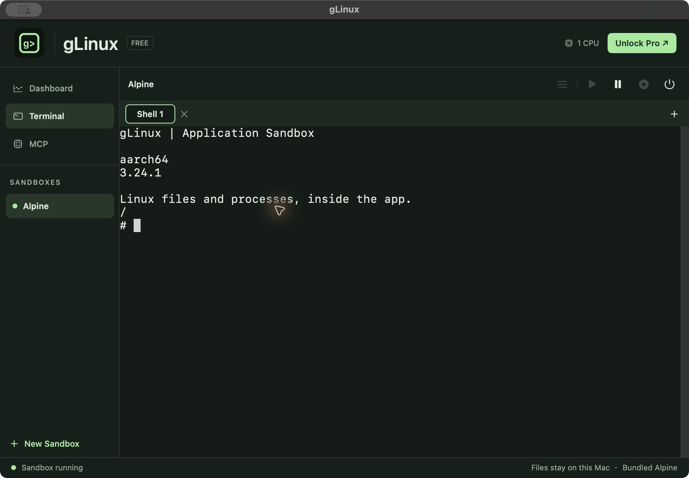

Application Sandbox
Give each application a Linux environment with its own files, packages and processes. Start, pause or stop it from one app.
LOCAL LINUX FOR APPS AND AGENTS
Run Linux applications in their own environments.
Give your AI agent a Linux workspace through MCP.
Free Alpine sandbox · Pro application sandboxes + MCP
Coming to Mac App StoreAsk an agent to build, test or run.
Create a task. Execute commands. Read results.
Linux programs, files and processes on your Mac.
MCP workflow illustration · Agent sandboxes require Pro

Give each application a Linux environment with its own files, packages and processes. Start, pause or stop it from one app.
Let an MCP client create a task sandbox, run Linux commands and read output. Keep a task’s packages and files across commands.
Share selected Mac directories, choose read-only or read-write access, and map ports for local services. Pro unlocks these connections.
APPLICATION SANDBOX
Install Linux packages for one project without mixing them with another sandbox. Choose Alpine or another compatible public Arm64 image with Pro.
Stopping a sandbox keeps its writable files. Restart it to continue working. Shared Mac directories stay at the locations you select.
Use terminal tabs for interactive work. Configure CPU cores, directory mounts and network options for Pro sandboxes.
MCP · PRO
Connect an MCP client to gLinux. A task gets its own environment; repeated commands with the same task ID share installed packages and files.
glinux_task_startStart a separate Linux sandbox for a task. Outbound network and writable Mac mounts are enabled only when requested.
glinux_task_execExecute Linux commands and receive stdout, stderr and an exit code.
glinux_task_shell_openOpen a PTY shell and exchange input and output for longer-running work.
Workflow examples: compile an Arm64 command-line program, run a project’s Linux tests, or inspect a sandbox’s files. MCP tasks are listed separately from terminal sandboxes in the app.
PLANS
$0
The included Alpine sandbox, one CPU core and a ready-to-use terminal. Files stay on this Mac.
Explore the basics ↗$4.99 / month
Multiple sandboxes, public Arm64 images, multiple CPU cores, shared folders, port mappings and MCP.
Subscription details ↗FOR ONGOING WORK
$34.99 / year
All Pro features. Eligible new subscribers pay $19.99 for the first year, then $34.99 per year.
Offer and renewal details ↗US storefront launch prices. Other regions use local prices. Subscriptions renew automatically unless canceled; the app and Apple purchase confirmation show your price and offer eligibility. The Mac App Store release is in preparation; purchases are not yet available.
Planned availability excludes mainland China. Hong Kong, Macau and Taiwan are included.
Application Sandbox + MCP, on your Mac.
Apple Silicon · macOS 14 or later